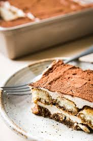

| Tiramisu |
| Buy on Amazon |
| Posted in June 13.2019/ posted in No-Bake Resipes |
|  |
|
Tiramisu is one of the most famous Italian dessert in the world, born in Treviso (a lovely town near Venice), delicious and easy to make. There are many variations of the tiramisu recipe. The following is the authentic Italian tiramisu recipe, the one you make on Sundays, the one you eat when you come to Italy, made with eggs and mascarpone cheese.There are many variations of the tiramisu recipe. The following is the authentic Italian tiramisu recipe, the one you make on Sundays, the one you eat when you come to Italy, made with eggs and mascarpone cheese. Ingredients
To make this fabulous Italian dessert you need a ceramic baking pan. For 8 people you need one of about 30 x 19 cm (12 x 8 inch), like the one we used in this recipe. There are several types but have a look at this set of Ceramic Baking Dish. They are perfect casseroles even for lasagna. Common Tiramisu Questions - AnsweredWhat kind of rum do I use in tiramisu>Dark rum is best |